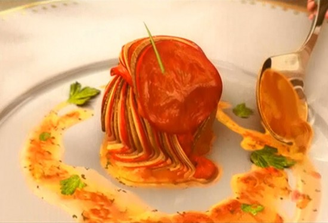

Ratatouille
Description:
A visually stunning French vegetable dish made famous by Remy in Pixar's Ratatouille.
Thinly sliced vegetables baked over a rich garlic tomato base—simple, elegant, and delicious.
Ingredients
- 1 eggplant
- 1 zucchini
- 1 yellow squash
- 1 red bell pepper
- 2 cups tomato sauce
- 1 garlic clove
- Olive oil
- Salt
- Thyme
Instructions
- Preheat oven to 375°F (190°C).
- Thinly slice all vegetables into rounds.
- Spread tomato sauce mixed with minced garlic in a baking dish.
- Arrange the sliced vegetables in a spiral pattern over the sauce.
- Drizzle with olive oil and sprinkle with thyme.
- Cover with parchment paper and bake for 45-50 minutes.